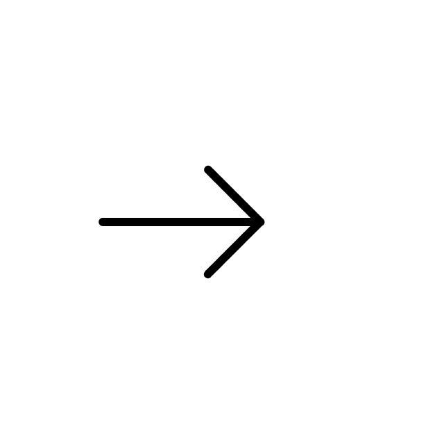

<nav class="navbar navbar-expand-sm bg-light">
    <div class="container">
        <div class="d-flex w-100 align-items-center justify-content-between">
            <div class="logo">
                
                <!--  -->
            </div>
            <div *ngIf="menuHide">
                <div class="dropdown dropstart">
                    <button type="button" class="btn btn-default dropdown-toggle" data-bs-toggle="dropdown">
                        <i class="fa fa-bars fa-2x" aria-hidden="true"></i>
                    </button>
                    <ul class="dropdown-menu dropdown-menu-end">
                        <li><a class="dropdown-item" routerLink="candidate-profile"><i class="fa fa-external-link" aria-hidden="true"></i>
                             Create a URL</a></li>
                        <li><a class="dropdown-item" routerLink="question-creation"><i class="fa fa-question" aria-hidden="true"></i>
                             Create a Question Bank</a></li>
                        <li><a class="dropdown-item" routerLink="test-evaluation-list"><i class="fa fa-list-ul" aria-hidden="true"></i>
                             Test Evaluation</a></li>
                        <li class="parentHover">
                            <h5 class="dropdown-header mb-0">Reports 
                                 <!-- <i class="fa fa-angle-double-right" aria-hidden="true"></i> -->
                            </h5>
                            <ul class="child">
                                <li><a class="dropdown-item" routerLink="all-testresult"><i class="fa fa-list-ul" aria-hidden="true"></i> All Test Results</a></li>
                                <li><a class="dropdown-item" routerLink="all-candidates"><i class="fa fa-users" aria-hidden="true"></i>
                                     All Candidate Profiles</a></li>
                                <li><a class="dropdown-item pointer" (click)="_logout.logout()"><i class="fa fa-sign-out" aria-hidden="true"></i>
                                     Logout</a></li>
                            </ul>
                        </li>
                        
                    </ul>
                </div>
            </div>
        </div>
    </div>
</nav>